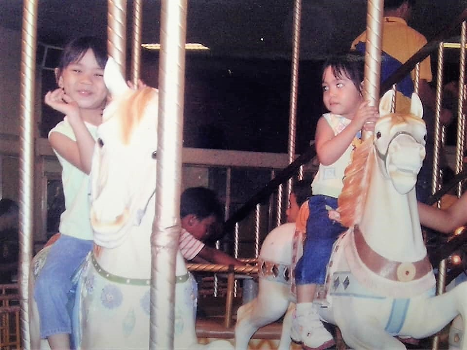
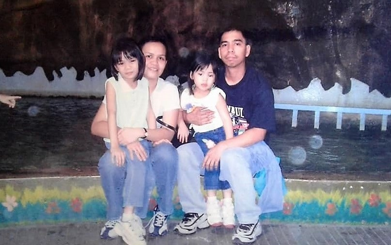
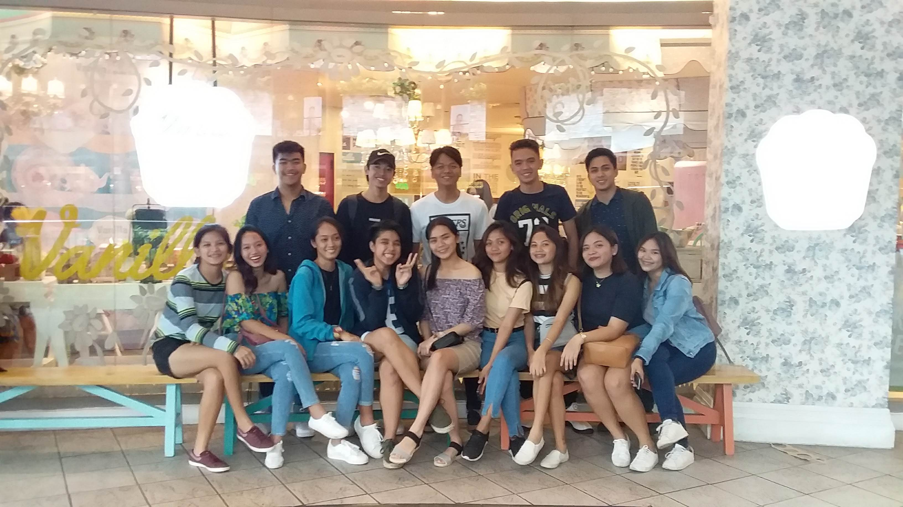
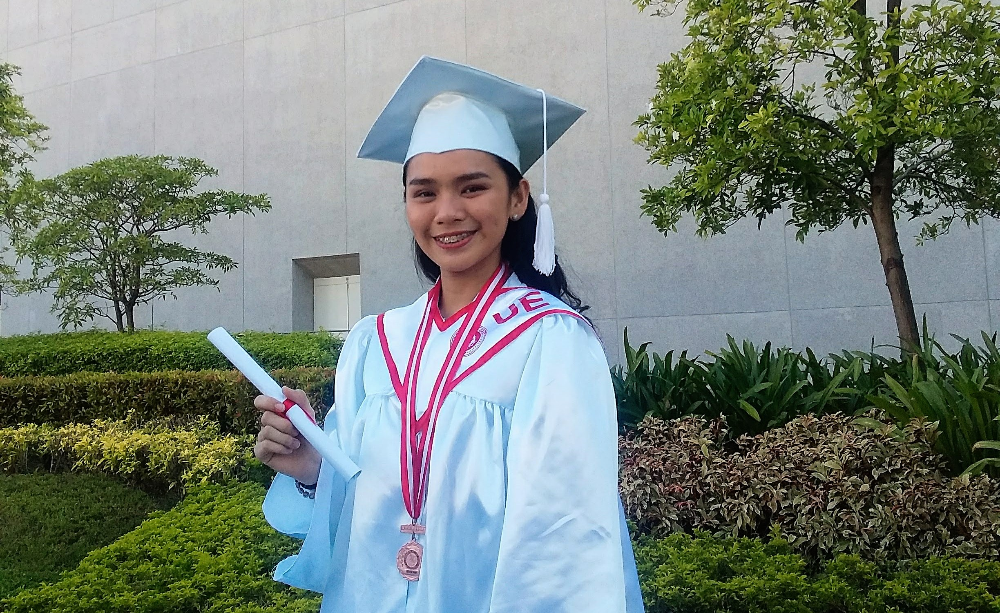
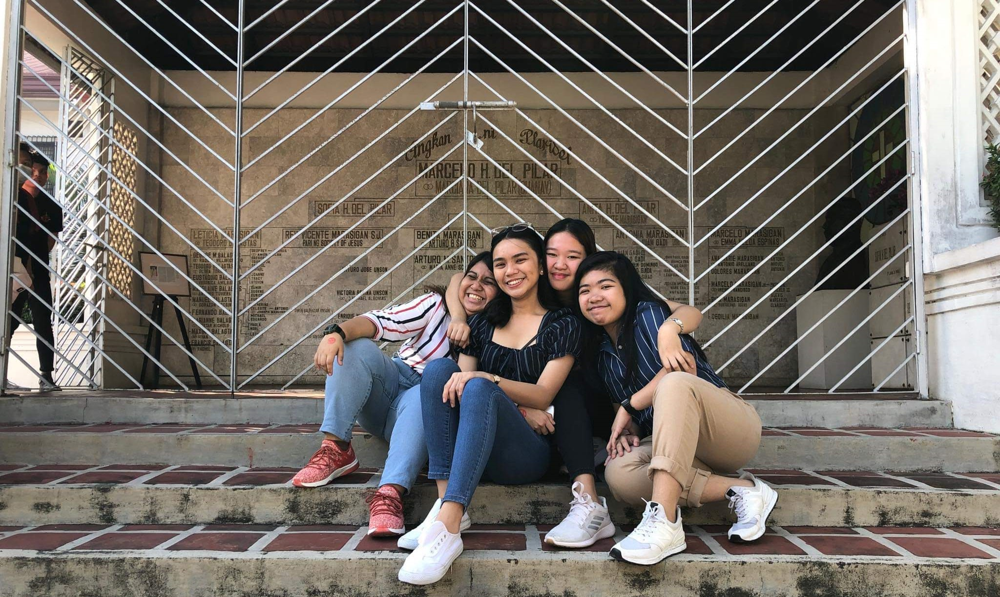
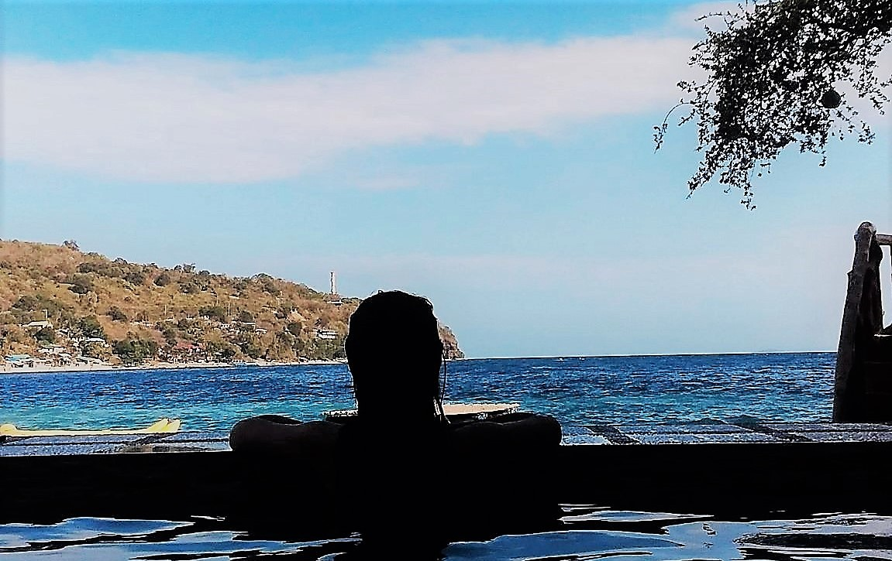

My childhood years were both fun and memorable for me. 1 At an early age, my parents taught me values in life that I still carry until now. 2 There was never a time that they never told me stories from my favorite book and some Bible stories before I go to bed. 3 My mama told me that I started to learn walking when I was 11 months old only. 4 I entered school when I was 4 years old at Rogerian Learning Center. 5 And, when I was in gradeschool, I entered an all-girls school in Quezon City – St. Theresa’s College. 6 I was there for 6 years, I met a lot of nice friends, but there were also bullies. 7 I just miss the big cafeteria and lawn in our school, where I could just play and run like carefree child. 8 Fieldtrips where the best during gradeschool. 9 We went to zoos, product factories, museums, and places like, Pampanga and Zambales.  10 While I was having fun, my parents were a bit worried while on a trip because I was still young, we were not allowed to have guardians. 11 They make sure that the snack, food, and drinks I bring are complete before I leave. 12 I also experienced having an exposure trip when I was in 6th grade. 13 It is where we visit different barangays near our school, and we donate goods that our club collected. 14 I remember playing bahay-bahayan and luto-lutuan with my cousins everyday after school. 15 We often also played Nintendo during weekends and my mama would prepare merienda for us.  16 I also remember during Sundays, after going to church, we used to go to the mall to play in arcades and playhouses. 17 My parents would usually let me and my younger sister play for an hour. 18 We met a lot of kids and played different toys there.19 It was just so fun to remember! 20 I am grateful for my parents because they did not introduce technology to me at a young age.
After graduating gradeschool, mom decided to transfer my sister and I to a new school.
1 I entered The National Teacher’s College when I was in junior Highschool.2 I studied there because my mom was studying her second degree in the said school.
3 During our first day, I felt awkward to the people around me since I am not used to have boys inside the room. 4 Unfortunately, my first friend was a guy.
5 And I made a lot of friends in our room as day goes by. 6 At the age of 13, I started to go out with my friends, who are also my groupmates, for our group project.
7 It was my first time to ask permission from my mama and I was really scared because she and Papa never let me go out with friends because I am still young.8 But my two friends insisted that they will bring me home because they know that I am not fond of commuting around Manila.
9 To my surprise, my mama allowed me to go out but asked a lot of things before doing so.10 During this year, I also got closer to my parents. I even tell them my happy crushes and problems I have.
11 When I was in 8th grade, I got separated from our block section and was transferred to the star section.12 I got nervous because I was the only one transferred in our circle but made friends again during that day.
13 I also experienced promenade during Highschool in Manila Hotel.14 I had so much fun during that day because I was dressed up like what I see on movies.
15 Intramurals and booths were also one of the most unforgettable.

16 During this time, I had also my 18th birthday, and I remember I only celebrated it with my family, and close friends and it was one of the best birthdays I had.
17 When I graduated junior high school, I decided to study Senior Highschool in University of the East.

18 I was in awe when I entered the campus because I wanted to study in a university and luckily, I met new friends.
19 I learned a lot from my SHS days, not just the lessons form modules but values as well.20 There are also professors who I still have contact with until now and became friends and mentors.
21 I graduated Junior Highschool in NTC and Senior Highschool in UE.
Finally, I made it to college! 1 I passed my college entrance exam in some of the schools I applied, and I still chose and stayed in the university.
2 I felt nervous during my first day because I remember my cousin telling me that college is not easy.3 New faces inside the room!
4 And yes, I met new friends from different schools in our block.5 During my first year I really had a hard time in my course already because I came from the strand STEM when I was in Senior High.
6 What I learned in that course was way different from what I encountered when I was in first year.7 It was really confusing, and I doubted myself many times because I thought my course was not for me.
8 I studied hard to prove myself and my parents that I was on the right track.9 Until I finished first semester of first year and was grant with College Scholarship.

10 I was not expecting it but all my hardwork were paid off.11 I also remembered experiencing a trip to Bulacan for our history class last February 2020, before the pandemic happened.
12 I had so much fun with my blockmates and friends during that time.13 During our 2nd year, pandemic is already present.
14 It was the toughest semester and school year for me because I got anxious all the time.15 I had a difficult time with the connection, using my device, communicating during group works, doing house chores etc.

16 My parents kept reminding me that I can do it, and to enjoy what I do and avoid pressuring myself despite all.17 I missed going out with my family to the beach every Christmas or Semestral break to relax and bond with the family.
18 I also miss going out with friends especially when we feel like we need to take a rest and just go somewhere else to ease the stress. 19 Now we could not do it.
20 It was indeed hard to manage stress during this tough times.21 All we can do is to stay home, pray and follow the safety protocols, to be safe and not get infected by the virus.
22 It is the help we can contribute to our heroes – the frontliners.
Go back to HOMEPAGE